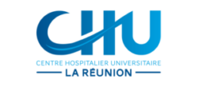

La réalisation de cette banque d’expériences et sa mise en ligne ont été rendues possibles grâce au soutien de la MNH
Banque d’expériences
Sous le parrainage du Secrétariat d’Etat aux personnes handicapéesLa Banque d’expériences rassemble sous forme de courtes fiches des actions et initiatives qui visent à faciliter l’accès à la santé des personnes en situation de handicap.
Elle a été construite pour :
• faire connaître ces actions,
• faciliter leur essaimage,
• donner des clefs à tous les acteurs et professionnels qui accompagnent les personnes en situation de handicap dans leur parcours de santé.
N’hésitez pas à contacter les porteurs des initiatives !
Les contenus de chaque fiche référencée sont de l’entière responsabilité du porteur de l’initiative
Pour toute demande d’information vous pouvez écrire à l’adresse suivante banque-experiences@sante.gouv.fr
26 initiative(s)
Je recherche par thématique :
Mieux accueillir et prendre soin des personnes handicapées en centre d’imagerie médicale, une volonté très affirmée des étudiants manipulateurs radio (DTS IMRT) de Besançon avec le soutien de la mission handicap du CCAS.
Le responsable et coordonnateur de la filière DTS IMRT de Besançon s’associe à la mission handicap du CCAS de Besançon pour transmettre aux futurs manipulateurs radio les bases d’un accueil réussi d’une personne porteuse de handicap en cabinet de radiologie. Le partenariat perdure depuis...GUIDE sur la conduite à tenir en cas de situations d’urgence et/ou inhabituelles pouvant survenir en établissements médico-sociaux handicap
L’ARS Ile-de-France a créé un guide sur la conduite à tenir en cas de situation d’urgences et/ou inhabituelles pouvant survenir en établissements médico-sociaux handicap. Destiné à tous les professionnels de ces établissements, il s’agit de 24 fiches décrivant 24...Un guide pour faciliter l’accès aux soins des personnes handicapées a destination de la personne aidée, de leur aidant et des professionnels de santé
Dans la situation où une personne ne peut se rendre seule chez un professionnel ou dans un établissement de santé en raison de ses difficultés ou de son handicap, il est nécessaire de bien préparer l’accueil pour que le professionnel de santé puisse connaitre à l’avance les...Parcours de soins global et pluridisciplinaire, dédié aux personnes en situation de handicap
Il s’agit de proposer dans une unité de lieu et de temps, un parcours de soins global et pluridisciplinaire, aux personnes en situation de handicap, souvent en rupture de soins. La prise en charge pluridisciplinaire est assurée par une équipe dédiée, composée de professionnels formés et...Accès aux soins des personnes en situation de handicap
Afin de mobiliser les établissements de la région sur le sujet de l’accessibilité aux soins des personnes en situation de handicap, QualiREL Santé leur propose une campagne régionale clé en main, composée de 3 fenêtres d’évaluation : un diagnostic organisationnel (grille...Soins somatiques pour personnes avec TSA et mallette d’habituation aux soins
Évaluation de l’acceptation des examens médicaux et des soins par les personnes avec TSA Bilans des obstacles à l’acceptation des soins (exemple : particularités sensorielles, déficit intellectuel, besoins de séquentiels, d’agendas, de pictos, antécédents d’échecs,...
